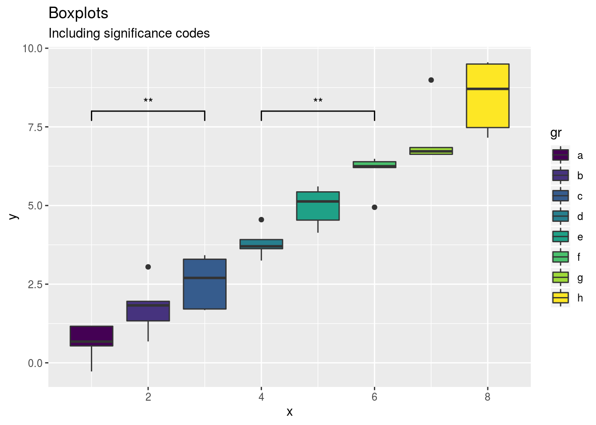

2 Box plots with significance codes
Here, we plot box plots with significance codes using the packages ggplot2 (included in tidyverse), ggsignif. and *hrbrthemes.
To start our R session we have to load the required R packages and set up our working environment:
library(tidyverse)
library(ggsignif)
source('pie_map/functions.R')Than we create the fake data…
data <- tibble(x=rep(1:8,each=5),
y=rep(1:8,each=5)+rnorm(40),
gr=rep(letters[1:8],each=5))…and plot it.
# initializing the plot
ggplot(data,aes(x=x,y=y,fill=gr))+
# adding the boxplots
geom_boxplot()+
# adding selected significance codes
geom_signif(comparisons = list(c(1, 3),c(4,6)),y_position = 8,
map_signif_level=TRUE)+
# add title and subtitle
ggtitle("Boxplots",subtitle = 'Including significance codes')+
# choose color map (from the hrbrthemes package)
scale_fill_viridis_d()